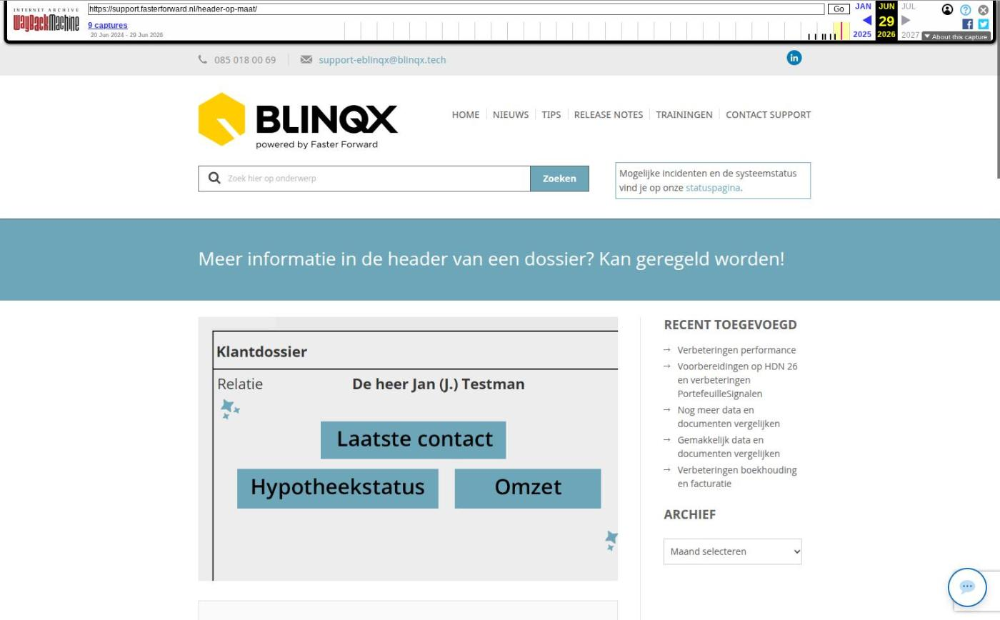

Op woensdag 29 april zijn Elements en eBlinqx weer verbeterd en uitgebreid met nieuwe features. Deze release bevat onder andere uitbreiding van het aantal documenten dat slim vergeleken kan worden, en verbeteringen in de koppeling met PortefeuilleSignalen.
Uitbreiding van data en documenten vergelijken
In de vorige release is geïntroduceerd dat je gemakkelijk verschillende documenten met elkaar kunt vergelijken en daarmee ook de klantgegevens in het dossier. In de stukkenlijst word je erop geattendeerd wanneer er bevindingen zijn over de documenten. Ook kan je zelf een vergelijking tussen verschillende documenten opstarten. Op deze manier krijg je zo snel mogelijk een zo compleet mogelijk dossier met relevante en actuele klantdata.


Uitbreidingen in deze release:
- Documenten om te vergelijken: De documenten die nu vergeleken en uitgelezen kunnen worden zijn: UWV verzekeringsbericht, werkgeversverklaring, pensioenoverzicht, salaris jaaropgave, salarisstrook en identiteitsbewijs.
- Serviceprovider-omgeving: In de serviceprovider-variant van de stukkenlijst zie je nu dezelfde duidelijke statusindicatoren en filters als in de standaardweergave. Ook kun je vanuit de serviceprovider-omgeving direct naar het vergelijkingsscherm om bevindingen te bekijken.
- Beoordelen met volmacht: Als je werkt met volmacht kun je nu eenvoudig aangeven of je een document beoordeelt namens de maatschappij of als serviceprovider. Het systeem toont de juiste knoppen op basis van je rechten en de situatie.
- Slimmere adrescontrole: Bij het vergelijken van adresgegevens gebruikt het systeem nu automatisch het correspondentieadres van de juiste persoon. Dat voorkomt onnodige bevindingen wanneer iemand op een ander adres woont dan de hoofdbewoner.
- Actuele status: Wanneer je een document opent, wordt de status van bevindingen automatisch ververst. Zo zie je altijd de actuele situatie, ook als je net een afwijking hebt opgelost.
UwKluis verbeteringen
We hebben verschillende optimalisaties doorgevoerd in de verwerking van documenten naar UwKluis. Hierdoor worden documenten sneller verwerkt en is de wachttijd tussen aanleveren en beschikbaarheid in UwKluis verkort.
Wat is verbeterd:
Snellere verwerking van documenten naar UwKluis
De verwerking van stukken richting UwKluis gebeurt nu efficiënter via een verwerkingsqueue. Hierdoor worden documenten sneller achter elkaar verwerkt en blijven er minder stukken in de wachtrij staan.
Meer documenten tegelijk verwerkt per verwerkingsronde
Het aantal UwKluis-jobs dat per keer wordt opgepakt is verhoogd. Dit zorgt ervoor dat grotere aantallen documenten sneller worden afgehandeld.
Voorbereiding op verdere optimalisaties in documentverwerking
De eerste stap is gezet om meer documentgerelateerde processen via een queue-structuur te laten verlopen. Dit maakt toekomstige verbeteringen in snelheid en stabiliteit mogelijk.
Wat merk je hiervan in de praktijk:
- Documenten verschijnen sneller in UwKluis
- Minder vertraging bij grotere aantallen stukken
- Stabielere verwerking bij piekbelasting
Verbeteringen koppeling met PortefeuilleSignalen
In de koppeling met PortefeuilleSignalen zijn er diverse verbeteringen doorgevoerd, waardoor er een betere data-uitwisseling is. De volgende verbeteringen zijn doorgevoerd:
- Alle relevante hypotheken worden meegenomen in de synchronisatie. De hypotheek hoeft niet meer de status lopend te hebben of hetzelfde onderpandadres
- Uitgebreidere klant- en partnerdata wordt gesynchroniseerd. Ook worden de kinderen gesynchroniseerd naar PortefeuilleSignalen.
- Legitimatie: afgifteland en afgifteplaats kunnen worden vastgelegd en worden meegegeven aan Portefeuillesignalen
- Dossierstatus wordt meegegeven aan Portefeuillesignalen voor inzicht in de huidige fase van het dossier
- De inkomensgegevens van klanten wordt door PortefeuilleSignalen opgehaald
- Na ontvangst van een SX-bericht met status Lening in beheer (20) wordt het dossier automatisch naar PortefeuilleSignalen gesynchroniseerd
- Producten en de geldverstrekkers worden niet meer gesynchroniseerd naar PortefeuilleSignalen aan de hand van specifieke Hypotheekbond ID’s. Hierdoor is het niet langer meer benodigd om deze codes in te richten
Standaard onderwerp gebruiken in mails
Mocht je workflowbeheer kunnen doen dan is het nu mogelijk om het onderwerp van de actuele standaard tekst te gebruiken uit de module “correspondentieteksten beheer” zodat de workflowactie niet telkens aangepast hoeft te worden als er een wijziging is in de tekst.
Als het vinkje aan staat wordt het onderwerp van de actuele standaard tekst gebruikt en is het invoerveld van het onderwerp niet meer aan te passen. Dit veld wordt dan automatisch gevuld. Het is nog wel mogelijk om het onderwerp handmatig in te voeren. Hiervoor laat je het vinkje uit staan.
Wil je zelf het standaard onderwerp kunnen beheren in de module “correspondentieteksten beheer”, dan kan een consultant dit voor je instellen in de workflow. Stuur hiervoor een mail naar support-eblinqx@blinqx.tech.

Overige verbeterpunten
- De laadsnelheid van de stukkenlijst is aanzienlijk verbeterd door validatieresultaten slimmer op te halen.
- We hebben twee API-endpoints uitgebreid zodat je op basis van een factuurnummer het bijbehorende dossier en factuur kunt terugvinden. Dit is vooral handig voor geautomatiseerde processen waarbij e-mails met facturen automatisch gekoppeld moeten worden aan het juiste dossier. Deze verbetering is speciaal ontwikkeld om automatische e-mailkoppeling mogelijk te maken.
- Er is nu de mogelijkheid om een tag toe te voegen voor het totaalbedrag van het betalingsoverzicht. Stuur een mail naar support-eblinqx@blinqx.tech om dit in te richten.
- De sortering in de stukkenlijst is aangepast. De beoordeling van de maatschappij of de serviceprovider is altijd leidend boven de interne status in de sortering op status van de stukken.
- In het tabblad bankgarantie bij hypotheken is de benaming ‘Overlijden’ aangepast naar ‘Beschermd+ (overlijden, werkloosheid, ongeval en aankoopkosten)’
Schermafbeelding van de oorspronkelijke pagina

Bron: Wayback Machine-archief